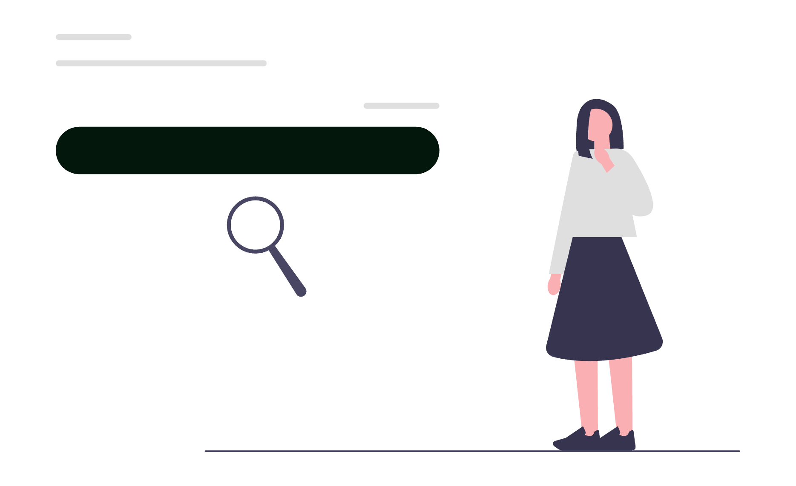
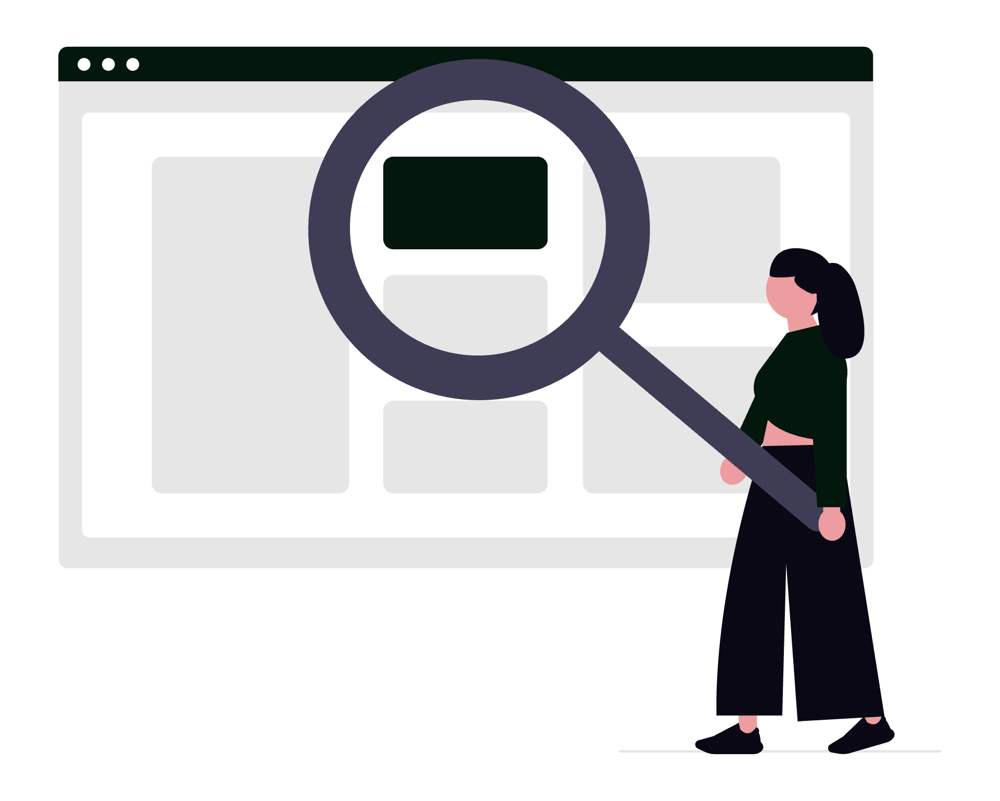

Cabinetul tău merită să fie prima opțiune în Google atunci când un potențial client caută ajutor juridic. SEO juridic profesionist nu înseamnă doar trafic, ci mai multe consultații calificate, mai puține discuții neproductive și un flux predictibil de clienți potriviți.

În piața juridică, vizibilitatea se transformă rapid în încredere. Când site-ul tău răspunde clar la întrebările reale ale clienților, iar prezența locală este bine optimizată, diferența se vede direct în agenda de consultații.
Ce înseamnă servicii SEO juridice, în mod practic
SEO juridic înseamnă optimizarea completă a site-ului și a prezenței digitale pentru căutări cu intenție legală, precum:
- "avocat dreptul muncii București"
- "consultanță juridică startup"
- "avocat divorț sector 1"
- "onorariu avocat litigii comerciale"
Diferența majoră față de SEO generic este nivelul de încredere pe care trebuie să îl construiești. În zona juridică, utilizatorul nu caută doar informație: caută siguranță, claritate și dovada că poate lăsa cazul în mâini bune.
Fundamentul vânzărilor din organic: pagini care convertesc
Pentru fiecare serviciu important, ai nevoie de o pagină dedicată, nu doar o listă generală de servicii. O pagină care convertește include:
- problema clientului formulată clar, în limbaj simplu;
- tipurile de situații pe care le gestionezi;
- pașii colaborării (consultație, analiză, strategie, implementare);
- estimări realiste privind timp, documente și costuri;
- întrebări frecvente și obiecții comune.
Structura paginii trebuie să urmeze o ierarhie logică (H1, H2, H3), cu text clar și call-to-action vizibil (telefon, formular, programare). Cu cât clientul înțelege mai repede că ești potrivit pentru speța lui, cu atât crește rata de contact.
Local SEO pentru avocați: cea mai rapidă sursă de cazuri noi
Pentru majoritatea cabinetelor, Local SEO aduce cel mai rapid impact comercial. Priorități:
- optimizează profilul Google Business Profile (categorii corecte, descriere, servicii, program, link de programare);
- menține NAP consistent (Name, Address, Phone) pe site, directoare și profiluri;
- colectează recenzii autentice, cu context relevant (tip de problemă, experiență, comunicare);
- publică postări periodice în profil (noutăți, articole, clarificări legislative);
- adaugă pagini locale dedicate (ex: "avocat drept penal Cluj").
Recenziile și semnalele locale influențează direct map pack-ul Google, locul unde potențialii clienți iau decizia de contact în câteva secunde.
Integrări esențiale: SEO + sistemul comercial al cabinetului
SEO produce rezultate mai bune când este conectat cu instrumentele deja folosite în firmă:
- Google Search Console pentru interogări, poziții, erori de indexare;
- Google Analytics 4 pentru traseul utilizatorului și conversii;
- Google Tag Manager pentru evenimente (click pe telefon, trimitere formular, programări);
- CRM / legal practice management pentru urmărirea lead-urilor până la contract;
- Google Calendar + automatizări pentru confirmări de consultații și reminder-e;
- e-mail marketing pentru nurture pe lead-urile care nu decid imediat.
Cea mai importantă metrică nu este traficul brut, ci numărul de consultații calificate generate din căutări organice.

Tool-uri recomandate pentru un flux SEO profitabil
Un stack simplu, eficient și orientat pe rezultate:
- Search Console: monitorizare cuvinte cheie și pagini care cresc/scad;
- GA4: comportament pe pagină, surse de trafic, conversii;
- PageSpeed Insights: optimizare viteză și Core Web Vitals;
- Screaming Frog: audit tehnic (titluri lipsă, redirect-uri, erori 404);
- Ahrefs / Semrush: oportunități de cuvinte cheie și analiză competitori;
- Looker Studio: dashboard lunar pentru parteneri sau management.
Nu ai nevoie de zeci de platforme. Ai nevoie de un proces clar de măsurare, optimizare și scalare.
Cum folosești AI fără să sacrifici rigoarea juridică
AI accelerează cercetarea și redactarea, dar nu înlocuiește expertiza avocatului. Folosește-l pentru:
- clusterizare de subiecte pentru blog;
- variante de structură pentru pagini de servicii;
- extragerea întrebărilor frecvente din interogări;
- rescriere pentru claritate, pe niveluri diferite de complexitate.
Exemple de prompt-uri utile:
- "Generează 20 de întrebări frecvente pentru clienți care caută avocat în litigii de muncă, orientate pe intenție informațională și comercială."
- "Propune structura unei pagini SEO pentru serviciul de consultanță juridică IMM, cu secțiuni orientate pe conversie."
- "Rescrie textul într-un ton profesionist, clar și empatic, evitând jargonul excesiv."
Regulă de aur: AI crește viteza, avocatul garantează acuratețea, etica profesională și conformitatea.
Best practices SEO juridic (checklist lunar orientat pe creștere)
- verifică interogările noi din Search Console și actualizează paginile cu potențial;
- adaugă 1-2 articole orientate pe întrebări reale ale clienților;
- actualizează conținutul vechi cu modificări legislative relevante;
- repară erorile tehnice (linkuri rupte, imagini grele, meta lipsă);
- îmbunătățește Call to Action (CTAs) și formularele de contact;
- urmărește pozițiile pentru 10-20 cuvinte cheie prioritare;
- măsoară rata de conversie organică și valoarea comercială a lead-urilor.
Tips and tricks care aduc diferența în piață
- Scrie titluri care includ problema + localitate + specializare, dar natural și convingător.
- Folosește studii de caz anonimizate pentru a crește încrederea și timpul petrecut pe pagină.
- Creează pagini "hub" pe arii de practică și articole "satelit" pe spețe specifice.
- Optimizează imaginile (dimensiune, compresie, alt text relevant) pentru viteză și accesibilitate.
- Include schema markup relevantă (Organization, FAQ, Article) acolo unde aduce claritate.
- Menține datele de contact vizibile "above the fold" pe paginile cu intenție comercială.
Concluzie
Serviciile SEO profesionale juridice funcționează când combină strategie, execuție și optimizare continuă pe baza datelor reale. Obiectivul nu este doar poziția în Google, ci creșterea constantă a numărului de clienți potriviți pentru cabinetul tău.
Dacă vrei mai multe consultații calificate, o prezență online care inspiră încredere și un sistem clar de generare a lead-urilor, programează o sesiune de consultanță SEO juridică. În această sesiune poți primi un audit practic al site-ului, priorități de implementare pe 90 de zile și recomandări concrete pentru creștere sustenabilă.